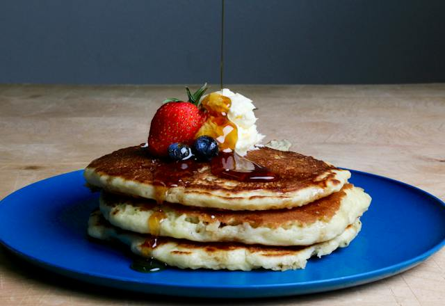

Pancakes

Description
Here's a simple recipe for delicious pancakes
Ingredients
- 1 cup all-purpose flour
- 2 tablespoons sugar
- 1 teaspoon baking powder
- 1/2 teaspoon baking soda
- 1/4 teaspoon salt
- 3/4 cup buttermilk
- 1/4 cup milk
- 1 large egg
- 2 tablespoons unsalted butter, melted
- Cooking spray or additional butter for greasing the pan
Steps
- In a large bowl, whisk together the flour, sugar, baking powder, baking soda, and salt.
- In another bowl, whisk together the buttermilk, milk, egg, and melted butter.
- Pour the wet ingredients into the dry ingredients and gently stir until just combined. It's okay if there are a few lumps.
- Heat a griddle or non-stick skillet over medium heat and lightly coat with cooking spray or butter.
- Scoop 1/4 cup portions of batter onto the hot griddle. Cook until bubbles form on the surface of the pancakes and the edges look set, about 2-3 minutes.
- Flip the pancakes and cook for an additional 1-2 minutes on the other side, or until golden brown.
- Repeat with the remaining batter.
- Serve the pancakes warm with your favorite toppings such as maple syrup, fresh fruit, or whipped cream.